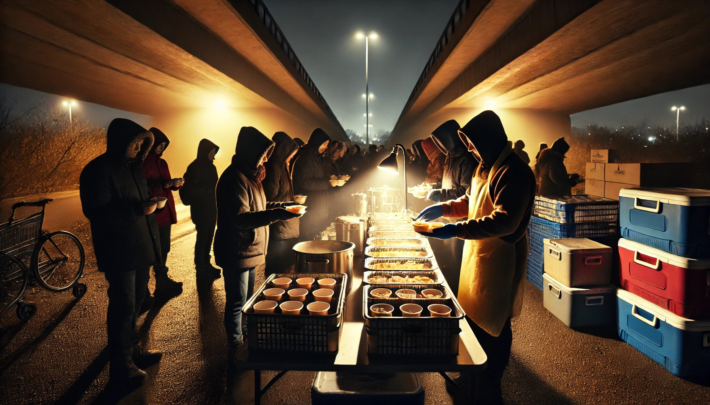

Browse by Category

Donating Food
Learn about the donation process and what foods you can donate.

Receiving Food
Find out how to request food assistance and eligibility requirements.

Food Safety
Information about our food safety standards and practices.

Volunteering
Discover how you can volunteer and make a difference.